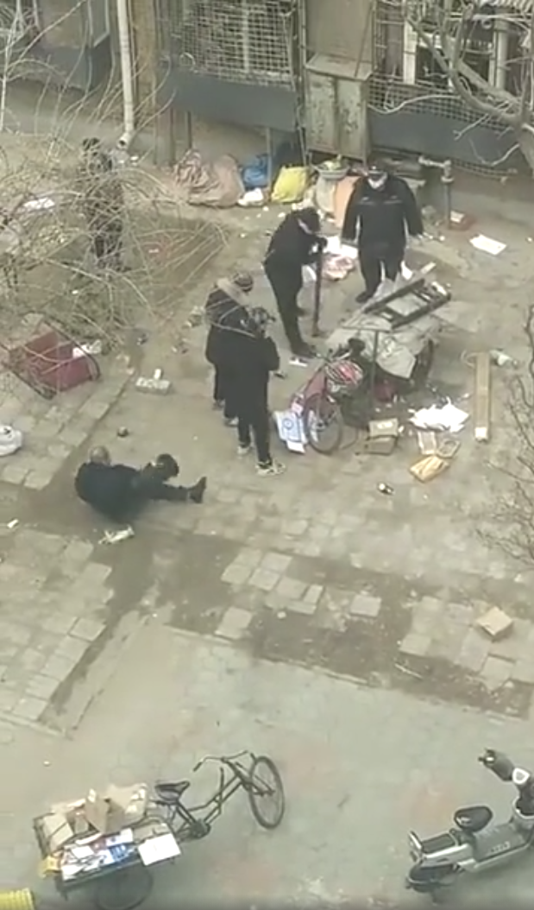
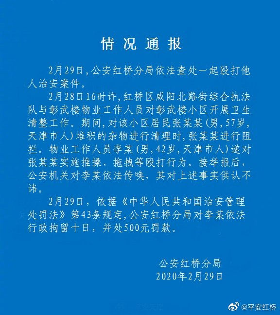

事件

奇葩图鉴
粉丝投稿:天津红桥区彰武楼小区的拾荒老人
官方发布
红桥区咸阳北路街道
28日，发现有网民在新浪微博发布我街道某社区发生肢体冲突的视频后，第一时间予以核实处置。现将情况说明如下：
28日，我街综合执法与物业公司联合清理彰武楼小区堆放杂物时，物业公司人员与视频中的老人发生肢体冲突，后社区负责人现场协调，物业公司与该工作人员向老人道歉，并得到老人谅解。我街已对物业公司负责人进行了约谈，责成严肃处理该工作人员。
据了解，视频反映地点长期、反复堆放废品，物业公司曾多次进行现金回购，但周围群众仍反映存在火灾隐患，视频当事老人也表示废品自行变卖，不再进行集中堆放，大家共同为居民营造良好
天津市公安局红桥分局
案件通报#天津市公安局红桥分局依法查处一起殴打他人治安案件

市民采访
ss小熊饼干
跟大家说一下今天上午的进展，上午我们一共有三个人进入了小区，一个朋友在外面，找到住址的时候，视频中的张大爷正好出去收废品去了，期间我们与物业管理人员聊了聊，张大爷回来后到他家里和他及其家人聊了很久，大致情况如下：1、张大爷：年轻的时候应该是在类似废品分拣处理的地方工作，因此具有废物回收的意识，可以说是有爱好也有技术基础，由于废品不能及时出货，多数时候堆放在自己一楼的窗下，也因此多与物业发生矛盾，大爷几年前腿摔伤过，留了钢钉，走路有些跛，大爷有残疾人证明，领低保，过节社区也会发一些东西照顾；2、家庭：张大爷与哥哥嫂子生活在一起，已经有18年了，能看出哥嫂真的把他当做家里人；3、打人者：据说好像姓李，物业人员，小区物业人员经常来清理张大爷的废品，毕竟存在安全卫生隐患，多数人比较客气，有时还会出钱回收废品，只有这个李某来了就骂人，很难听，家属都不愿意搭理他，这部分是家属反映的不是物业说的，具物业负责人反映，这个打人者昨天已经被辞退；4、起因：由于疫情，这次的清理工作更深入，要没收三轮车，张大爷去阻拦，发生了视频中的暴力行为，当时嫂子在屋内并不知情（应该是习惯了清理，没有特别注意），后来看了对面楼的视频才知道这次这么严重；5、伤情：大爷说昨天一晚上没睡，不过看着精神状态很好，早上又去工作了，我们询问是否需要去医院，家属表示不用；6、捐款：在我们再三表示全国人民的关心和捐款意愿后，哥嫂仍说不需要并感谢大家的关心，我们表示如果不需要钱，我们捐一些口罩酒精等防护用品，哥嫂还是不需要，这个我随后再想办法；7、警方：由于我们是非小区人员进入小区，社区负责人报了警，警方在我们离开时正好赶到，了解情况后他们表示这个事情还在处理中，会给一个结果。
事情经过大概是这样，这个家庭就是我们天津普普通通的老百姓，张大爷与家人生活在一起可以说有生活保障，我个人觉得每一种生活方式都值得被尊重，希望警方可以给施暴者以严惩！
文森杜
天津彰武楼被打大爷：“打人者未向我道歉。活一天是一天”。 （物业已派人道歉，但打人者未出面。）
王福瑞
没有调查就没有发言权，所以，我亲自跑到彰武楼调查了一番。
这个地方就在本溪路地铁站，离我家饭店不远，我吃完饭坐上公交直接就过去了。
进入社区之后，还不是很好找，彰武楼小区很大，找了十来分钟才找到，通过反复比对，确认自己的确找到了。
我拍照的时候，有一个穿着粉色大衣的大姐路过，问我是干什么的，我说我也是天津人，住得离这儿不远，也有亲戚住这儿，知道这件事到这儿来看看，了解一下情况。
我问她：“怎么，您是咱社区工作人员吗？”
粉色大衣的姐姐说：“是的，我是居委会的，您是记者还是？”
“我不是记者，算是一个热心市民吧，我是天津的一个大v，之所以过来，是因为网上能看到的仅仅有一个视频片段，这个事情的前因后果都不清楚的情况下，很多网民就开始骂街，骂个人也就算了，很多人直接指着天津市鼻子骂，作为天津人我觉得很耻辱，所以我想亲自过来，了解一下情况，挨骂也得明明白白的挨骂，不能什么事都不知道就挨骂。”
大姐了解了我的来意，开始和我讲事情的前因后果，讲得差不多的时候，正好开过来一辆车，车上的人看到我和居委会的人聊天，开车窗问怎么回事，我亮明身份讲清来意之后，车上的人也下来了，他是物业经理，是那几个保安的顶头上司。
物业经理又从头到尾把这件事和我说了一遍，说的和居委会那位女同志是一样的，不存在串通，也不存在事先沟通和准备，都是站一块话赶话聊出来的。
这是他们两个人，和物业经理的车，为了保护人家的隐私权，没有拍脸和车牌号，仅仅为证明我的确去了，也的确他们沟通过的事实。
这两个人和我叙述的时候是分别叙述的，并没有串通什么的，两个人说的基本一致。有人说我造假，衣服明明灰的你却说是粉的，这么说的人一点脑子没有，这衣服看上去真的是粉的，不知道为什么一拍是灰的，我要真造假还能颜色都对不上？服气了也是。
接下来，我给大家原封不动的叙述一遍，还原一下事情经过。
这个拾荒老人叫老四，说是老人，其实不老，今年57岁，在彰武楼拾荒已经有很长时间了，和物业居委会的都很熟，并不是不认识的关系。
物业经理给我指了前方这片空地，说：“现在的样子是收拾完的样子，都是我们给收拾的，之前他用一大片铁丝网，把这块公共空地圈起来一大片，里面堆满了他四处捡来的垃圾，味道很难闻，一到夏天苍蝇蚊子一大堆，而且有很多纸夹子，明确属于消防安全隐患，前后楼的居民已经反映过他很多次了。”
尤其前段时间，是全国创文创卫期间，基层工作人员忙的不行，天天盯卫生，从当官的到公务员都出去满大街捡烟头，在这种情况下，他收集的这些垃圾就更给政府部门的工作拖后腿了。
于是，物业和居委会和他商量过很多次，不要再收垃圾了，他捡来的垃圾能卖十块二十块的，他们出价三五十收走，弄来一辆破三轮，一百块钱，他们三百收，之所以高价收，就是希望他不要再这么干了。
但是没有用，他还是屡次三番，不顾居民的反映，不顾街道物业的劝说，一次次的重操旧业，继续捡垃圾，连他自己的哥哥嫂子都劝过他很多次，他也不听。
老四并不是没有收入，他是街道的帮扶对象，一个人领着好几份钱，再过3年，60岁一退休，他还能领到一笔退休金，生活上完全不存在问题，在这种情况下，街道还经常给他送米送面送油，可以说是对他很好了。这个人也并不是你们所想的什么homeless，他的哥哥嫂子也住在这儿，天天照顾他，跟亲爹妈也差不多，生活上并不存在问题。
咱们国家搞得最好的就是精准扶贫，彰武楼小区在出这件事之前，在评比中拿了天津市第一还是红桥区第一记不清了，是一个基层工作做得其实还很好的社区。
什么流离失所衣食无着，不存在的。
其他的可能还存疑，关于帮扶这块绝对是真的，精准扶贫啊！这是发生在我身边的实实在在的事，我们附近不远就有公租房，很多人住着免费的公租房（有和租房价格相匹配的补贴），拿着各种各样的补贴，街道还经常送温暖给菜给肉给米面油，现在我遇到的老人没有骂共产党的，最不济的也会说一句“共产党这就算不错，相当好了”。
这个是绝对不能黑的。
那么，这次的事是怎么回事呢？
之前讲到，创文创卫期间，街道和居委会屡次劝说，他还是屡次收垃圾，现在到了疫情期间，他还是四处收垃圾，那么脏的垃圾，四处摆放，万一传播了新冠后果不堪设想，街道和居委会找他严肃的谈，别扒垃圾箱了，他还是不听，还是继续的收。
街道居委会说，你非得给大家添乱，再这样，我们就要强行收缴你的废品了，他也不听，照收不误。
然后我说：“这些情况我都知道，但是再怎么样，也不应该动手啊，干嘛还把他撂地下啊，还拖着走，控制住就得了啊。”
物业经理说：“好么，他手里有钉子你知道吗？“
“我们去收缴的时候，他手里拿着钉子，执法人员没办法了，也的确被他的行为激怒了，才动的手。”
事发之后，物业经理得知有人动手了，问清前因后果之后，虽然说是事出有因，还是第一时间就把那个保安给辞了。
当天晚上，物业找到了老四了解情况，得知老四也没有受伤，保安第一时间也辞了，东西也收缴完毕了，又再三劝说老四别再收了，老四也答应了，这件事其实就过去了。
然后就不知道被谁捅到网上了，今天早晨红桥区里的也给彰武楼党群服务中心打了电话，人民日报也来电话了。这些人跟我反馈的时候也觉得很冤枉，这一件事被拍下来就这样了，我们之前做了那么多好事，这么帮扶他，怎么没人说呢？
当然，既然是问话，我也不敢说保证百分之百的真实，但是我不傻，他们说这些话的时候，全都不假思索，侃侃而谈，编瞎话没有这样的，而且人家又都是公职人员，在我明确表示了会发到网上被大量网友看到的情况下，他们依然该说什么说什么，无论怎么看，我都觉得这不会是什么谎话。
至于那个红旗，我拍下来了，不得不说网友眼是真尖，还的确是个国旗。
关于这个国旗的事，居委会和物业其实也跟他说过，“国旗都得挂起来，挂在干净的地方，你这国旗插在你废品车上，周围都是废品，这么脏，这样算怎么回事啊”，他也不听。
事情前因后果就是这样，我相信他们说的是真实的，一不存在事先沟通，事发的时候是半夜，我早晨去的，没有什么统一口径的时间；二来都是话赶话跟聊天一样说的，两个人前后说的完全一致，应该就是这么回事。老人的话在家，我不是记者没有采访权，但是人家既然敢让我发到网上，就不太可能是假话，谁敢这么干？
说来说去，无论怎么样，那个保安也不应该动手，这是居委会和物业经理都认同的，他们也第一时间采取了补救措施，安抚了被打的拾荒者，各级部门也第一时间前来过问，了解了前因后果，被打的人也的确没有伤，保安也都已经被辞了，上级部门也觉得不是什么大事，才草草发了这么一条简短的声明出来。
而且，现在新的结果出来了，打人的保安被拘留了十天，我就告诉你们这件事不可能这么就完了，听信，你们总是没耐心。
但是，广大网友并不了解这里面的前因后果，他们只看到这样一个视频，一瞬间什么言论都出来了。
“无家可归者被保安欺负”。
“挖掘机是人，卡车是人，只有人不是人”。
“这个社会，老百姓一丁点尊严都没有“。
“老爷子一定是个很爱护国旗，我都能想象他把国旗擦得干干净净，珍而重之插在车上的样子”。
等等这些言论，都出来了，还拿了不少赞同。
光看这一个视频，的确是太容易得出这样的结论了，我也理解你们的义愤填膺，因为一开始的我也是气的不行，这个事件太容易让网友发泄情绪了，但是了解下来，事情根本不是网友们想象的那样。
而且，用国旗上纲上线，太严重了吧？内心戏是不是太多了点？
天津人也并不是你们说的那么恶。在天津， 一味蛮横无理的人是绝对不得人心的，天津人办事非常讲究一个“分寸”，一个“面子”，一上来就打人，这种事情在天津别说没有，发生的太少太少了，上来直接动手，这根本不符合天津人的办事特点。
一个听相声长大的城市，一个发大水满城人跑到大街上玩水，小小子背着小闺女上街逮鱼的城市，一个人人都会说相声，满大街段子手的城市，我不说，你们自己想想，会是你们口中的恶霸城市吗？
我是太了解天津人的性格了，所以我才觉得事情可能没有那么简单，才决定亲自跑去现场一探究竟，打人无论如何都是不对的，但毕竟还是事出有因。
以上就是事件的全部经过，我已经加了物业经理和居委会工作人员的微信，大家有什么想了解的，还可以继续问我，我还可以再去调查和了解。
作为一个天津人，讲几句公道话，天津在这次疫情中方方面面都做得很好，大家有目共睹，我也不希望自己的家乡被看作是欺压弱小的恶棍城市。
平心而论，老爷子里外里两千多，虽然说逢年过节有点福利，但稍微大点手真的不够花，他想多挣点钱，有错吗？也只能捡点废品。基层人员天天出去捡烟头容易吗？也不容易，但无论如何也不应该打人，但是他也有他的难处，众生皆苦，该抨击的我们要抨击，但是也要看到每个人都不容易，唉，人活着，可不就是这样么。
天津人平时讲究乐乐呵呵，根本也不是那么强凶霸道，这件事归根结底有错没有，有的，但请大家理解毕竟是事出有因。也希望大家不要把错误归咎到全部天津人头上，天津人真不都是这样，希望大家还是能嘴下留情，感谢你们！
其实，细想想，这位叔叔到手两千多，想多挣点钱，有错吗？没有。基层工作人员每天出去捡烟头，那么辛苦，工作性质决定一定要管他，有错吗？也没错。打人必须被抨击，这没错，但我同时看到了众生皆苦，每个人都在自己的命运里拼命的往上爬，多一点宽容和理解吧，因为不光是他们，我们自己，也不容易。
唉。
最后，我也欢迎大家把这篇答案截图转发到微博等其他平台，让大家都了解一下事情的另一面，不同的声音，是怎样的。
以上。
————————————————————————
PS：有人在评论里说我是收了钱洗白的，在此我对天发誓，我如果真的是收钱写文，哪怕一分钱，我全家出事故横死，我求老天爷帮我应验这个毒誓。
喷我的人，你们如果要喷我，最好跟我一样发一个毒誓，“答主如果没收钱我全家也横死”，要玩跟我这么玩。
还有人怀疑“怎么这么巧，你一去就都来了”，对此我也照样发毒誓，如果我说瞎话照样全家死，如果按照你们的逻辑，这个世界上就没有巧事了。
我玩知乎以来从没编过故事，我敢对自己说的每句话负责，我的人品，不是随便哪个过来就能质疑的。
另外，我找不到老人在哪，我也不是记者也不是什么公司机构，仅仅代表我个人是很难采访路人和老人的，一开始你们能看到的只有视频，我负责把物业和居委会的话传过来，老人那边其他的人在采访，你们不妨两边都听着，我所做的是尽自己一份力量去还原全貌，并没有主观臆断的下定论。
以上。